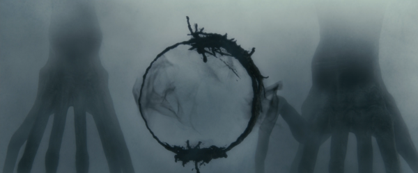
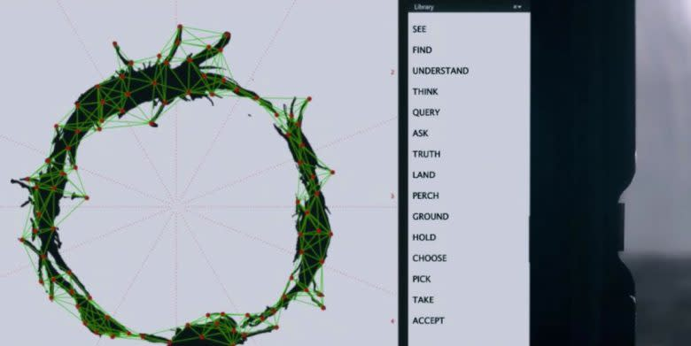

Building Heptapod B
Chrissy Cuskley, Month, Year
Generative art for your alien orthography needs.
In April 2025, I worked with Prof Simon Kirby and New Media Scotland to create multimedia animations to accompany a screening of the 2016 Dennis Villeneuve film Arrival. This is one of the the only films out there with a serious academic linguist protaganist (Louise Banks, played by Amy Adams), and one which also takes linguistics itself quite seriously. Professor Jessica Coon, a professor in linguistics at McGill University, worked on the film as a consultant. You can read more about our take on what the film means for the relationship between language and cognition in this short essay we wrote for the event. This post will focus on the process and inspiration behind the visual generative animations I built for the film.
The film is based on Ted Chaing's excellent short story, The Story of Your Life. The very broad strokes of both the story and the film are of a first encounter: aliens - called Heptapods for their seven-pointed radial forms - have landed on Earth. Humans can do little with their collective curiosity and anxiety about that fact unless we figure out how to communcate with them. In cognitive science, this is actually a common thought experiment we use to help understand language, especially its evolution. Assuming a species possesses incredibly complex general cognition, computational abilities, and irrepressible socio-cognitive urges to communicate with others (a state some might refer to as "language-ready"), how do we go from nothing to something? Even with two willing and able intelligent beings ready to do communicative business, how we establish an effective communication system from nothing is non-trivial.
This is the technical engine for the plot in both the story and the film, but as you may have guessed from the title of the original story, the emotional hook is far more personal. It is about the inertia caused by romantic and parental love, and about how we weather intense interpersonal loss and change, but somehow still remain the same person (at least a little) throughout our lives. I'll say no more because spoilers, but if you have seen the film, read the story - if you're not familiar with either, do both.
The film and the story
Our starting point for the event was to connect the film to the story more explicitly - many people don't even know it's adapted from a story at all. We aimed to somehow translate quotes from the original story into Heptapod B, mapping those to particular points in the film in a non-linear way. Understanding our approach to this requires a little bit of background about key features of Heptapod B - and the story explains this more fully than the film.
While the film adaptation is certainly a love letter to the story, the latter explains key facts about the aliens' language more technically, particularly how it relates to their cognition and experience in the physical world. The film, on the other hand, takes advantage of its visual medium in ways you may not expect. Mercifully, Villeneuve does not immediately shove a glistening, quivering alien body on screen (though eventually we do get a good look at the Heptapods); instead, the visual impact the aliens make is mainly through their distictive visual language, called Heptapod B. This is not to be confused with Heptapod A: the chittering, growly acoustic language we first hear from the Heptapods (they never make progress with Heptapod A in the film, but seem to learn both Heptapod A and B in the story).
I delimited certain sections of the spectrograph and typed in a tentative gloss for each: "heptapod" for [flutter1], "yes" for [flutter2], and "chair" for [flutter3]. Then I typed "Language: Heptapod A" as a heading for all the utterances.
Gary watched as I was typing. "What's the 'A' for?"
"It just distinguishes this language from any other ones the heptapods might use,"
The Story of Your Life, p.98
A key point about Heptapod B is that it is not a writing system for Heptapod A; it is an entirely different language. The Heptapods are bimodal bilinguals: they communicate in two modalities (auditory and visual), and the languages in each of those modalities are completely different. This holds important insights about the kind of complex communcation system language is, and the similarly complex system we know Heptapods must have to have arrived on Earth. First, humans as a species have thousands of languages, and that's just right now: there's no reason to believe that any other species with a complex communication system would have only one, especially if many of their ships have landed all over Earth. Second, it shows that language is modality independent - humans mostly use spoken languages, but that doesn't mean that this is how language (or complex communication more generally) must be or even should be.
You might think the most obvious counter-example to this what you're looking at right now: a writing system. But actually, human writing systems aren't languages in themselves: they are idiosyncratically compressed mirrors of existing spoken langauges. The more relevant human analogue for Heptapod B is signed langauges, of which there are at least 200-500 in the world, and which live in the :visual-gestural modality. Heptapod A is to Heptapod B as spoken English is to ASL or BSL; not as spoken English is to written English. Interestingly, people often make the same mistake about signed langauges that Louise pre-empted by immediately identifying Heptapod A: people erroneously assume that there is only one universal sign language, and/or that all signed languages are somehow mutually intelligible because they live in the visual/gestural modality.
In short, what makes signed languages a better analogue to Heptapod B than written languages is that they is they are not mirrors of spoken languages like writing systems are. British Sign Language (BSL) is not a gestural instantiation of spoken English in the way that graphemes stand-in for sounds and words in written English. BSL actually has little to do with British English, other than this being another language it is obviously in contact with. We don't consider someone who speaks, reads, and writes English to be multilingual, though they are arguably multimodal - but someone who signs BSL and reads and writes English is (like a Heptapod) a :bimodal bilingual.
The separation of spoken and signed languages is also well-illustrated by the fact that while British English and American English are generally quite similar and very mutually intelligible, BSL and American Sign Language (ASL) are two completely different languages. In a family tree of signed languages, ASL is closer to French Sign Language and Chinese Sign Language than BSL. This is just the tip of the iceberg of hundreds of other distinct sign languages.
The takeaway is that Heptapod B is not a written form of Heptapod A, it is its own language entirely. Louise identifies this as a new kind of visual language; she deliberately discards terms like alphabetic, logographic, or syllabic that we use for written forms of spoken languages. Instead, she coins the term semasiographic:
I went to the charlkboard and drew a circle with a diagonal line bisecting it. "What does this mean?"
"'Not allowed?'"
"Right." Next I printed the words not allowed on the chalkboard. "And so does this. But only one is a representation of speech."
Gary nodded. "Okay"
"Linguists describe writing like this" — I indicated the printed words — "as 'glottographic,' because it represents speech. Every human written language is in this category. However, this symbol" — I indicated the circle and diagonal line — "is 'semasiographic' writing, because it conveys meaning without reference to speech. There's no correspondence between its components and any particular sounds."
"And you think all of heptapod writing is like this?"
"From what I've seen so far, yes. It's not picture writing, it's far more complex, It has its own system of rules for constructing sentences, like a visual syntax that's unrelated to the syntax for their spoken language."
The Story of Your Life, p.108
Imagining Heptapod B
Before the film's distinctive smoky, inky symbols, it's not clear anyone had really thought much about what Heptapod B looked like, including Ted Chiang. The story doesn't need this; it gets a lot done with detail about how Heptapod B is not like human writing (or human language) than what it actually is like - particularly visually. Chiang doesn't give the reader much to go on: "a doodle of script; vaguely cursive". But given its visual medium, the film could hardly leave this as a mystery: they had to make the inky, circular Heptapod B symbols that are now synonymous with the film.

My first stop when looking into making some Heptapod B animations for our screening was to dig into how the Heptapod B symbols were made for the film. How did they go from "a doodle of script; vaguely cursive" to the gorgeous radial symbols in the film? The story is illustrative: to sum up, they started trying to make something like an alphabet, drawing on inspiration from existing human writing systems. But it all looked very clunky and very human. In the end, the production designer's artist wife, Martine Bertrand, just designed something weird, which eventually became the Heptapod B we see in the film.
How, then, did they decide what the symbols meant? They mapped them onto some utterances, and had computer scientists analyse them for patterns, post-hoc. Those patterns became the "rules" of Heptapod B that we glimpse in the film. You can watch a (long) video of how they did this here; this process is the basis for the analysis you see in the film, where networks of little dots connect across the symbols.

First, this story is cool because it makes these symbols feel more organic: these weren't really designed for a specific function, they were designed to look cool, and that's pretty much it. It's less Esperanto and much more Wingdings than I thought it might be (though clearly, significantly more elevated than Wingdings). This has some nice paralells with natural language: language has the appearance of having been designed for a specific function, but it isn't actually designed by anyone. Language just evolves and structure emerges as an adaptive feature during this process. In the case of Heptapod B, they just designed it to look cool, but it turns out there's naturally enough structure in looking cool to meaningfully analyse it.
Second, I was hyped because I thought that if they mapped out some features perhaps they tried to articulate some generative rules for Heptapod B, and then surely there was some kind of Heptapod B generator out there and I would have less work to do. But alas: no such luck. There's a Heptapod B font, but this is not quite right. As we elaborated in the short essay that accompanied the screening, the whole point of Heptapod (A or B) is that it isn't linear. As such, generating it by typing out a sequence of letters feels like cheating.
There's also sort of dictionary of Heptapod symbols from the movie that you can get a cool poster of, but part of our aim was to make Heptapod B "translations" of quotes from the story - not just display symbols you already see at some point in the film. In the film, they do come up with a way to write Heptapod B, using a touch screen where they select little segments to form a whole signal; but even this feels like squential humans making Heptapod B. While Heptapod B is mostly produced through this weird app, later in the film Louise is able to form a few Heptapod B symbols more organically with her hands and the inky dust (handily provided for her from her Heptapod friends' appendages).
It's this more organic effect that we really wanted; so neither the font or some tap-n-go generator would work. I wanted it to feel more like Heptapods were sending quotes from the story using new symbols; and Heptapods build a symbol all at once. Beyond the cheating or the lack of novelty, the real issue is that both of these solutions are just static images: it would be difficult to use either the font or images from the film to make symbols grow in real time like they do when the Heptapods actually generate them. I would have to grow them myself.
Growing Heptapod B
Before you nod off hearing more about how I made the thing, it's probably worth seeing for yourself. In the end, the concept was pretty simple: we generate a heptapod symbol, and then it dissolves/morphs into text, specifically, choice quotes from the story, aligned with specific moments in the film. The short clip below shows the "raw" animation, which you can also demo in your browser here. You can also see and interact with the code on Open Processing.
For the event itself, Simon added some effects to make things more watery, in addition to some sounds - and magically editing around the time issues discussed below.
I am not actually a digital artist or animator as part of my "real job" (which is technically, to be a linguist). And so, as much as I would love to have spent a couple hours here and there replicating visuals from a film with a $47 million budget and a special effects team to match, I tried to bring myself back down to Earth. Here's what it can't do:
- Have the dusty/inky three-dimensional quality the Heptapod B in the film does, particularly when we first glimpse it;
- Come out of a ghostly fog from a seven-pointed, starfish-esque appendage (alas);
- Have random gaps in the circles for some symbols; I might build this in later.
In addition to this, there are some other aesthetics that had to change. Although the heptapod in the film is mainly black on grey-ish fog, we needed to project white on black to prevent the intermittent projection of the Heptapod B from blinding people while they were trying to watch the $47 million film.
You might have noticed if you look at the two videos above, or futz around enough with refreshing the web page: the same English quote doesn't generate the same Heptapod symbol. It can't, because there are a lot of random parameters in here (which you can read more about below): the number of protrusions is random (albeit falling within a range determined by the total number of particles, so somewhat tied to the quote), the size of each protrusion is random, the number of tendrils it has is random, and the number of tendrils that have bulbs is random. One could also :tie some of these to the quote; but for now, the only fixed parameter set by the English text is the total number of particles (which sets the maximum possible number of protrusions). This means that it would be more or less impossible to generate the same Heptapod B symbol twice, unless you changed the code so you could :set these parameters more directly.
In the end, I think there's something nice about this: the English quote very loosely determines the form of the Heptapod B symbol, but there is a lot of potential for variation. If we think of Heptapod B as designating a very broad family of Heptapod visual languages, I like to think of this as getting a different Heptapod B language from a different Heptapod B culture each time it loads. As Louise points out in the story, we should expect there to be potentially thousands of Heptapod languages, so why not?
Getting in the weeds: How the code works
You can find the full code for the Heptapod B Generator on Open Processing, where you're welcome to remix and adapt it for your Heptapod B needs with attribution. You might be able to figure out howt he code works just by looking at if you know some Processing or p5js, but I doubt my code is that clean or transparent, so you may want to read below first to understand a bit about how it works.
The engine behind the whole animation is a particle system, which allows for the application of specific forces to particles to make them move to where you need them when you need them to. This is how the morphing is accomplished: the same particles that make up the Heptapod B symbol build the English text (in fact, the number of particles is determined by the English text, a priori). The code relies on a few emitters and two classes of particles, which differ mainly in how they are drawn, alongside a class of little tendril appendages:
[:a brief note on filenames on Open Processing]
- Emitters, which are invisible but "spew" out all the particles. These allow us to apply forces or actions (like, move to English text) to all the :child particles of an emitter at once, rather than iterating over particles in the space. This is in
emitter.js, which is based on code from basic particles in p5js - Basic particles only appear as a circle, also based on basic particles in p5js. When they're part of the Heptapod B symbol, they appear as a circle with a random diameter between 3 and 15px. This all happens in
basicparticle.js. When they are "dust" elsewhere in the space, they're drawn as a circle with a diameter of 2px. - Some particles are classed as more complex protrusion particles, and are drawn on the Heptapod B circle as a bulge with a random size (within a range). This happens in
protrusion.js - Protrusions are extended by a separate class of tendrils, which randomly reach into or outside of the circle (within limits). Some tendrils randomly have "bulbs" at the end of them, sort of like little ink blots or drips. This happens in
tendril.js
These are the classes on which the code relies, but the action is directed from a p5js sketch, heptapodsketch.js, which relies on a draw() loop running at 60 frames per second. This starts in the setup stage with a quote from the story, and uses the p5js function textToPoints(). This determines how many points are required to write out the quote, and determines the location of these points of these points for the English text; this, in turn, determines how many particles to create in the system. This is a few thousand particles for a quote like "From the beginning, I knew my destination, and I chose my route accordingly" - this is actually quite a lot, and this can make things slow. Normally when using particle systems with continuous emitters, you'd want a mechanism by which the particles eventually die based on how long they've been around, since managing lots of them can grind an animation to a halt.
Depending on the number of points in the quote, a random number of protrusions is set (i.e., longer, :more complex quotes will generally have more protrusions in their corresponding Heptapod B symbol). Each is set to emerge at roughly equal intervals sometime between when most of the outer circle is visually complete and just before the symbol disperses to dust to form the text. The number of protrusions is based on the points required to write the text: it determines the maximum possible number of protrusions by choosing a random integer between 2 and the number of points divided by 400, which I chose arbitraily after some testing (any lower and the protrusions sometimes got a bit out of control; any higher and they may be a bit too sparse). The list of quotes is determined in the quotes.json file.
The space has three invisible particle emitters in the centre, which shoot out particles until the number of particles is equal to the number of points required to form the relevant quote. Each particle is initiated and "spewed" out from the middle of the space without a target: it's pushed outward by a semi-random "wind" force. But even without executing on its destination yet, each particle already knows it's eventual position in the human (in this case, English) text as a p5js vector (i.e., an x,y point on the Canvas).
As I mentioned earlier, a few thousand particles is actually quite a lot, which makes the whole animation a bit long: the Heptapod B symbol can't morph into English text until there are enough particles in the space to spell out that text. Even spewing a few particles out each frame at 60 frames per second, you're looking at 15+ seconds until there are enough particles to actually write a short sentence like the quote above. This is slightly annoying for my very human impatience, but there's an elegance to it that aligns with the story: the Heptapod symbol can just get out there without a temporal care in the world - all the protrusions could come out right away because their parameters are set; I've only made them come out gradually so our bored little human eyes have something to look at. This is because we can't write the English text until we've done the proper particle emitting to write the sequence the human way.
So, there is a little something to see while we're waiting for all these particles to exist. When the particles hit an outer circle, most of them "solidify" and slow down: each particle is drawn as a circle of a random size with a diameter between 3 and 15 pixels. Unless, of course, they are protrusions: these are set to come out at more or less equal intervals after a few seconds, and emerge gradually: bulges first, tendrils second, and bulbs last. Tendrils are initiated with a random size between slightly larger than the protrusion itself (so it's visible) and a quarter of the circle's diameter (which is determined as 1/3 of the width of the window), randomly going either inside or outside the circle. Tendrils are drawn with random decreasing stroke weight, and some tendrils randomly end in "bulbs", which are drawn as a series of little circles of increasing size starting with the stroke weight at the end of the tendril.
When the emitters have created a number of particles equal to the number of points required to write the quote, they shut off. At the same time, the physical forces in the space shift: each particle's stored attractor from the text is turned on, and all of the particles float towards the text until it's visible. Once everything settles, at least in the interactive HTML version, you can press the 'f' key to shift each particle's attractor again, making the particles "flee" off screen. Finally, you can press the 'j' key to kill all the existing particles, reset the quote, and advance to the next Heptapod B symbol.